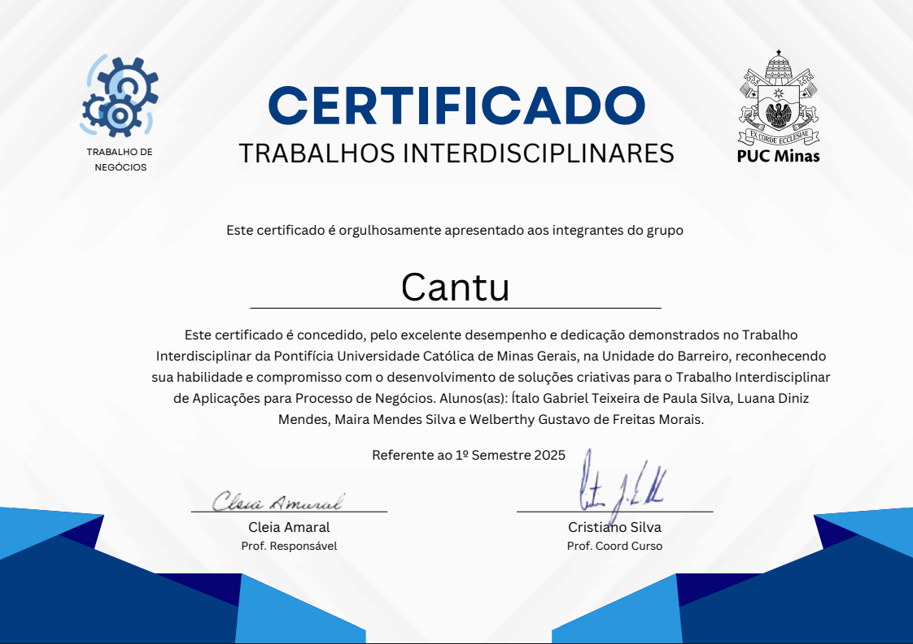

Desenvolvido com Tailwind CSS para destacar projetos e competências de forma moderna e responsiva.
Plataforma para organização de repúblicas estudantis, focada em economia colaborativa e integração.

Vencedor do prêmio de melhor Trabalho Interdisciplinar (TI 2) do 2º semestre de 2025 na PUC Minas.